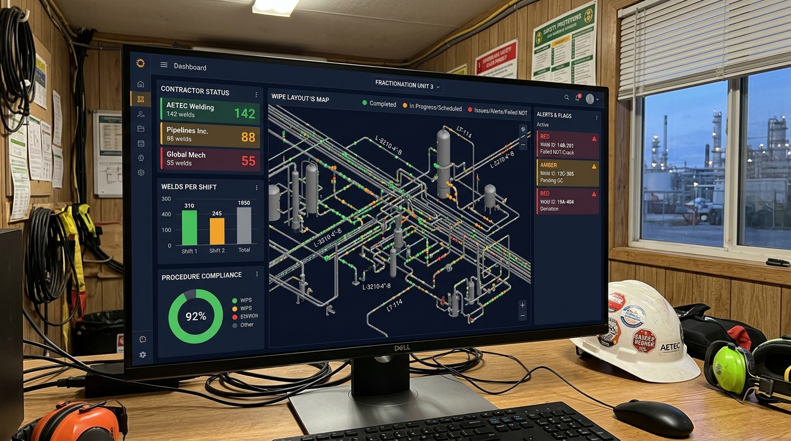

Validated across 19 interviews with turnaround managers, QC inspectors, and contractors on the Gulf Coast.
FieldFlow gives you real-time weld execution visibility across every contractor and shift — so you stop being the last person to know, and start getting ahead of rework before it becomes a delay.
You're coordinating Turner, Zachry, and Performance simultaneously. Each one runs their own travelers, their own QC records, their own shift logs. You're the integration layer — manually stitching together a picture that's always 12 hours behind reality.
By the time QC walks the line and flags the cut-out, the crew has rotated, the welder has moved on, and the rework is already cascading into your schedule.
"Trust but verify is always communicated... but it is not implemented."
— Repeated verbatim across multiple interviews with turnaround managers and QC inspectorsThe incoming crew inherits fit-ups with no reliable status record. They walk the stations, eyeball the state, and hope the previous crew left accurate travelers. Most didn't.
You have no independent verification of execution status until QC walks the line. By then, preventing the cut-out is no longer possible — managing it is all that's left.
Welders deviate from WPS when they're behind. Wrong material specs, unapproved machine parameters, incomplete fit-up checks — and no system flags it before the X-ray.
Documentation mismatches between crews turn rework attribution into a blame game. Ownership of defects gets disputed while your schedule keeps slipping.
FieldFlow gives you an independent view of weld execution status — procedure compliance, fit-up state, inspection readiness — without waiting for QC to walk the line or contractors to self-report.
Independent execution data across every active weld on your scope — procedure compliance, fit-up status, and inspection readiness — visible to you without waiting for the morning stand-up.
Structured handover summaries replace the walkthrough. Every fit-up status, outstanding issue, and weld state captured before the next crew starts — so the information doesn't die between shifts.
Turner, Zachry, Performance — consolidated in real time. You stop being the integration layer manually stitching together siloed traveler logs from contractors who don't share information with each other.
Turnarounds are 2–6 weeks. FieldFlow is designed to deploy inside that window — not after it.
Load your weld scope — unit, weld count, contractor assignments, WPS references. Takes one planning session with your QC manager.
Day 1–2 before mobilizationCrews log weld status at each stage. Supervisors get real-time alerts on procedure drift, missed checkpoints, and handover gaps — before QC walks the line.
Live during the turnaroundYou see the consolidated picture across all contractors and shifts in one view. Morning stand-up becomes a verification, not a discovery session.
Daily, from day one
Every claim on this page comes from conversations with turnaround managers, QC inspectors, piping superintendents, and welders on the Gulf Coast.
"Trust but verify is always communicated... but it is not implemented."
Validated across multiple respondents — the supervision gap is systemic, not individual"Owner operators feel the pain further in the process, are not close to the root cause of the problems."
Post-Master Research Memo — 19 interviews, Gulf Coast refinery and contractor professionalsSingle undetected weld defect during turnaround: $500K+ in lost revenue from delayed restart.
Direct interview source — upstream operations, Gulf CoastWeld failures in reactors trigger unplanned shutdowns lasting weeks. Repair cost exceeds $100K per event — before schedule penalty.
Validated: ExxonMobil-scale operations, Gulf Coast refinery contextThese are the real objections from our interviews — and the honest answers.
One scope. One conversation. We'll show you what real-time weld execution visibility looks like — using your scope structure, not a generic demo.
Not a sales pitch. A live walkthrough using a real turnaround scope. Fabian Gomez — downstream chemical engineer, turnaround execution background. This is a peer conversation.
Book the Scope Review — 30 Min